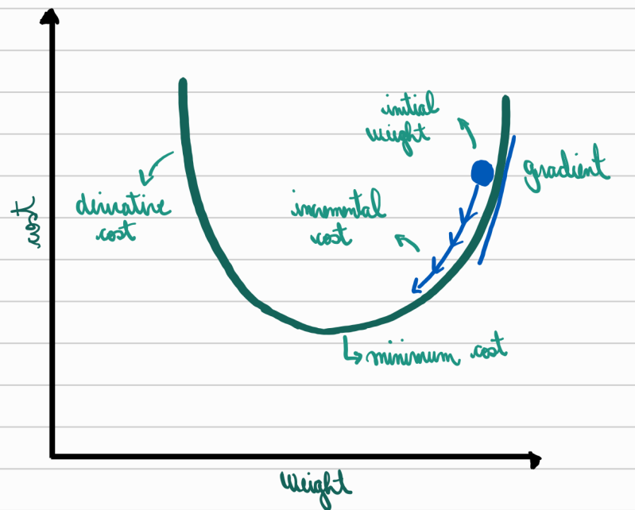
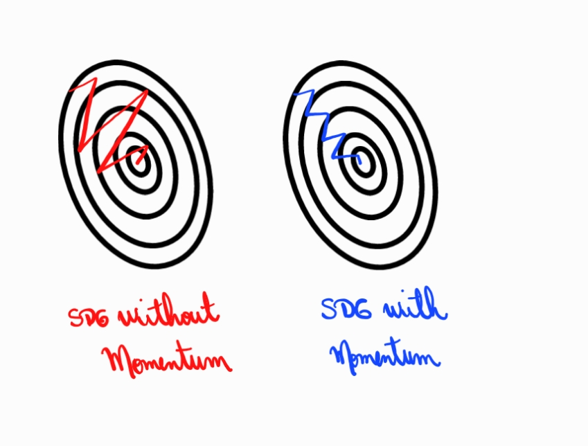
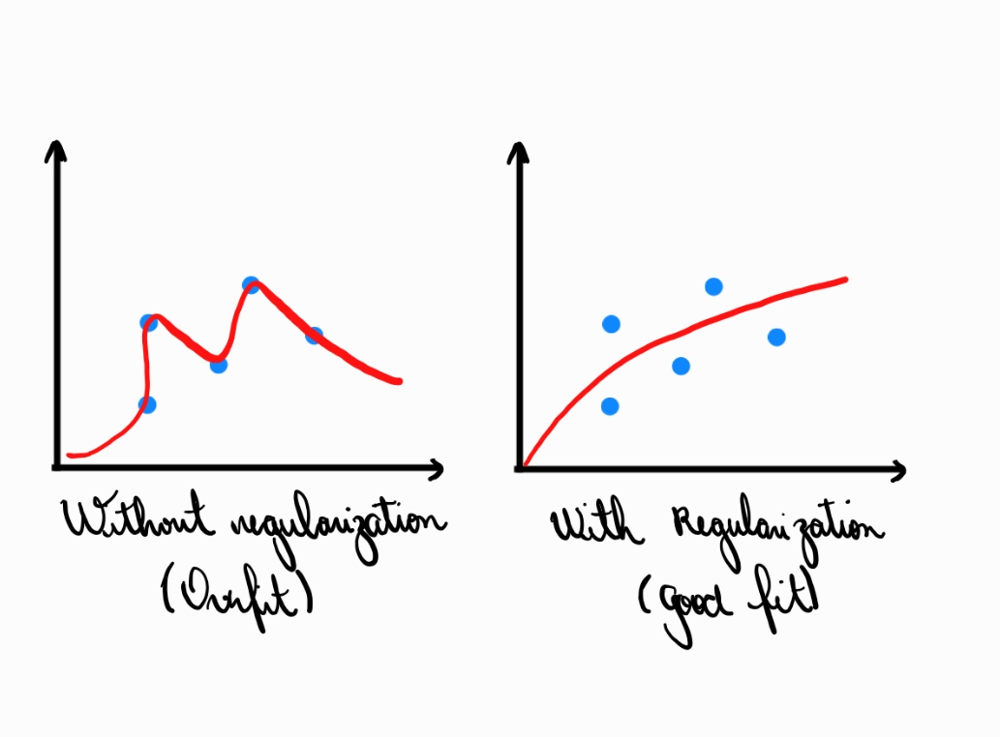
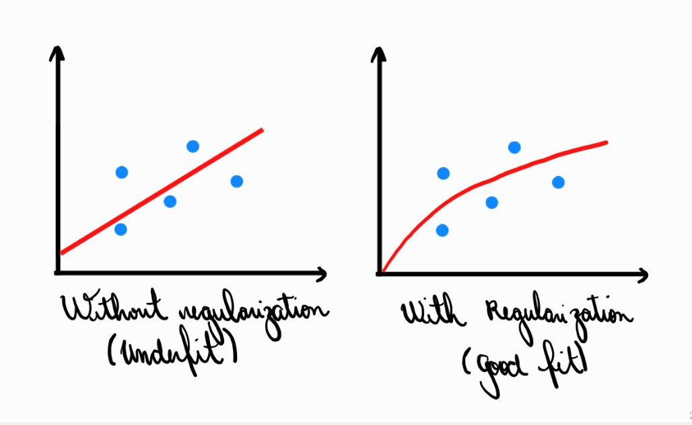
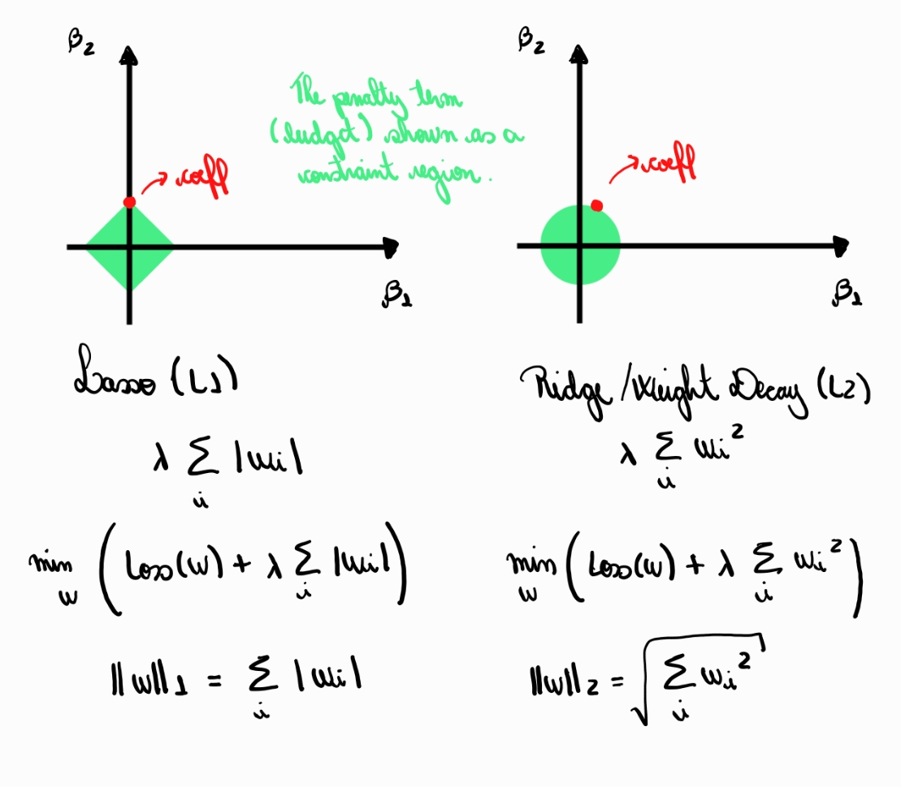

Index
1. Optimization
Optimization is the mechanism that allows a neural network to learn. It adjusts the model’s parameters so that predictions become closer to the desired outputs, guided by a loss function that measures how far the model is from being correct. In other words, optimization is the process that transforms a fixed architecture into a system that adapts to data.
Neural networks rely on gradient-based methods because the loss landscape is extremely high-dimensional and complex. Backpropagation computes how the loss changes with respect to each weight, allowing the model to update its parameters in directions that reduce error. Since evaluating the entire dataset at once would be too expensive, modern training uses minibatches, introducing some randomness into the process but greatly improving efficiency.
The challenge is that the loss surface contains flat regions, steep valleys, oscillations, and many irregularities. Simply following the gradient may lead to slow progress or unstable behavior. For this reason, optimization algorithms incorporate strategies to smooth updates, adapt learning rates, or use information from past iterations to guide the trajectory more effectively.
Another difficulty is choosing how large each update should be. Small steps make training slow, while large steps can cause divergence. Different optimization methods balance this trade-off in different ways, shaping how quickly and reliably the model converges.
Ultimately, optimization determines whether a neural network actually learns useful patterns. It is the foundation upon which all other training techniques—such as momentum, adaptive optimizers, and scheduling methods—are built.
1.1. Gradient Descent
Gradient Descent is the basic algorithm that guides how a neural network updates its parameters. It adjusts the weights in the direction that most reduces the loss, using the gradient as a compass. The goal is simple: move step by step toward values that make the model’s predictions more accurate.
At the core of Gradient Descent is the gradient, which measures how the loss changes with respect to each parameter. If increasing a weight makes the loss grow, the gradient will indicate that the weight should decrease, and vice versa. Backpropagation allows the network to compute all these gradients efficiently, even for millions of parameters.
The algorithm updates each weight by taking a step proportional to the gradient and to a scalar known as the learning rate. This learning rate determines how far the algorithm moves at each update: small steps lead to slow but stable progress, while large steps may cause oscillations or divergence. Choosing an appropriate learning rate is therefore essential for training to succeed.
Although Gradient Descent is conceptually simple, the loss surface of deep networks is irregular and full of twists, which makes the descent pathway far from smooth. Flat regions can stall progress, steep directions can make updates unstable, and noisy gradients (from minibatches) can push the model in imperfect directions. Still, despite these limitations, Gradient Descent remains the foundation for virtually all modern optimization methods in deep learning.
1.2. Minibatch SGD
Minibatch SGD is a practical version of Gradient Descent that estimates the gradient using only a small portion of the dataset at each update. It makes training faster, cheaper, and more responsive, while still guiding the model in the right direction toward minimizing the loss.
Instead of computing the gradient over the full dataset—which is often too large to process at once—the algorithm selects a small batch of examples and uses them to approximate the true gradient. Although this introduces randomness into the training path, the estimate is usually accurate enough to steer learning effectively. The stochasticity also helps the model escape overly sharp or overly specific solutions, improving generalization.
Because updates occur after every minibatch rather than after the entire dataset, the model learns continuously. This leads to faster feedback between prediction and correction, letting the network adjust its parameters more frequently. The computational cost is also reduced: minibatches fit into memory more easily and are well suited for parallel hardware like GPUs.
The noise introduced by minibatch sampling, however, makes the optimization path more irregular. Instead of a smooth descent, the loss curve oscillates as the algorithm reacts to slightly different gradients at each step. Still, this variability is often beneficial, preventing the model from getting stuck in unhelpful regions of the loss landscape and making learning more robust.
Minibatch SGD therefore becomes the backbone of modern deep learning training. It balances efficiency, stability, and generalization, providing a practical compromise between full Gradient Descent and purely stochastic updates.
1.3. Momentum
Momentum is an extension of Gradient Descent that makes learning smoother and faster by accumulating information from past updates. Instead of reacting only to the current gradient, the algorithm builds a sense of direction over time, helping the model move consistently toward lower loss.
The core idea is simple: each update is influenced not only by the present gradient but also by a fraction of the previous update. This accumulated “velocity” allows the optimization to flow through shallow regions and resist oscillations in directions where the gradient frequently changes sign. As a result, Momentum tends to accelerate progress along stable paths and dampen noisy, zigzag movements.
Mathematically, the algorithm maintains a velocity term that keeps track of past gradients. When the model encounters a long, gentle slope in the loss landscape, this velocity grows and pushes the network forward more effectively than plain Gradient Descent. Conversely, in directions where the gradient fluctuates or forms steep walls, the accumulated momentum slows down the updates, providing stability and preventing erratic jumps.
Momentum is particularly helpful when the loss surface has narrow valleys—common in deep networks—where one direction is steep and the other is shallow. Plain Gradient Descent wastes time oscillating across the steep direction, advancing very slowly along the shallow one. By remembering the consistent component of the gradient, Momentum helps the model move forward steadily instead of vibrating sideways.
Overall, Momentum improves both the speed and the reliability of training. It gives the optimization process a sense of inertia, allowing the network to advance through difficult regions of the loss landscape with more confidence and less noise.
1.4. Adam
Adam (Adaptive Moment Estimation) is an adaptive optimization algorithm that adjusts both the direction and the size of each weight update. It combines the stability of Momentum with the flexibility of per-parameter learning rates, allowing neural networks to train efficiently even in complex, noisy loss landscapes.
Adam keeps two moving averages during training: one for the gradients themselves (capturing direction, like Momentum) and another for the squared gradients (capturing how large or variable they are). These two estimates help the optimizer decide not only where to move, but how big each step should be. Parameters with consistently large gradients receive smaller updates, while parameters with small or unreliable gradients are allowed to move more freely.
Because Adam adapts the learning rate for each individual weight, it handles situations where different parameters evolve at very different scales. This is especially useful in deep networks, where some layers may require tiny adjustments while others benefit from more aggressive steps. The combination of momentum-like smoothing and adaptive scaling helps the optimizer remain stable even in highly irregular regions of the loss surface.
Another advantage is that Adam works well with noisy gradient estimates, such as those produced by minibatches. The algorithm filters this noise through its moving averages, producing updates that are more consistent and less sensitive to momentary fluctuations. This makes training faster to converge and often more robust.
In practice, Adam has become one of the most widely used optimizers in deep learning because it requires little tuning and performs reliably across many architectures and tasks. Although not always the best choice for final performance, its convenience and stability make it a common default in modern workflows.
1.5. Learning Rate and Learning Rate Scheduling
Learning Rate Scheduling is the strategy of adjusting the learning rate during training instead of keeping it fixed. The goal is simple: start with steps large enough to make fast progress, and gradually reduce them to allow the model to refine its solution without overshooting or oscillating.
During the early stages of training, a relatively high learning rate helps the optimizer explore the loss landscape quickly, covering large distances and escaping shallow traps. However, as the model approaches regions of lower loss, these large steps become counterproductive. They can cause instability, prevent convergence, or bounce the parameters around a good solution without ever settling. Scheduling solves this by steadily decreasing the learning rate as training progresses, enabling both speed and precision.
There are many scheduling strategies. Some reduce the learning rate at fixed intervals, while others respond directly to training performance—for instance, lowering the rate when the loss plateaus. More advanced approaches modify the rate in smooth curves, such as exponential decay or cosine annealing, allowing the training dynamics to evolve more gradually. Despite their differences, all schedules share the same intention: match the step size to the needs of each phase of learning.
A well-chosen schedule can dramatically improve training stability and final accuracy. It helps avoid the pitfalls of a single fixed learning rate, which is often too large for late training and too small for early exploration. By controlling how aggressively the optimizer moves through the loss landscape, learning rate scheduling becomes a key mechanism for efficient and reliable convergence.
2. Regularization
Regularization refers to the set of techniques used to prevent a neural network from memorizing the training data instead of learning meaningful patterns. Its goal is to guide the model toward solutions that generalize well, reducing overfitting by discouraging overly complex or unstable parameter configurations.
In deep learning, a network with many parameters can easily fit noise, outliers, or accidental correlations present in the training set. When this happens, the model performs extremely well on the data it has seen but fails to make accurate predictions on new data. Regularization works by introducing constraints or penalties that push the model toward simpler, more robust representations. Instead of freely adjusting all parameters to match every detail in the training set, the network is encouraged to find smoother, more stable connections between inputs and outputs.
These constraints can be applied in different ways: by modifying the loss function, altering how parameters evolve during training, or introducing controlled randomness in the learning process. Although each regularization method uses a different mechanism, they all share the same purpose: prevent the network from relying on features that are too specific to the training data.
Regularization is fundamental because high-capacity models—especially deep networks—are naturally prone to overfitting. Without some form of regularization, even large datasets may not be enough to guide the model toward the underlying structure of the problem. By shaping the training dynamics and limiting unnecessary complexity, regularization enables neural networks to achieve better accuracy, stability, and reliability when applied to real-world data.
2.1. Overfitting
Overfitting occurs when a neural network learns the training data too precisely, capturing noise, outliers, and irrelevant patterns instead of the underlying structure of the problem. A model that overfits performs extremely well on the data it has already seen but fails to generalize to new examples.
This happens because deep networks have enough capacity to memorize almost anything presented to them. When the training set contains accidental correlations, measurement errors, or rare cases that do not reflect the true distribution of the data, an unconstrained model can adapt its parameters to reproduce these details perfectly. As a result, the loss on the training set continues to decrease, while performance on validation or test data begins to degrade—a classic sign that the model is not learning meaningful patterns.
Overfitting also tends to produce unstable and overly complex decision boundaries. Instead of forming smooth relationships between inputs and outputs, the model twists itself around the specific samples it has encountered, creating fragile representations that easily break when exposed to new conditions. This fragility is usually invisible during training but becomes evident when the model faces slightly different data.
To avoid this scenario, regularization techniques are essential. They limit unnecessary complexity, introduce constraints, or add controlled randomness that prevents the model from relying on overly specific features. Techniques such as dropout, L1 and L2 penalties, early stopping, and data augmentation act in different ways but share the same purpose: help the network focus on patterns that generalize.
Overfitting is therefore not a failure of the model, but a natural consequence of its expressive power. Understanding how and why it occurs is a key step in training neural networks that are not just accurate on paper, but reliable in practice.
2.2. Underfitting
Overfitting occurs when a neural network learns the training data too precisely, capturing noise, outliers, and irrelevant patterns instead of the underlying structure of the problem. A model that overfits performs extremely well on the data it has already seen but fails to generalize to new examples.
This situation often arises when the model is too simple relative to the complexity of the task. A network with too few layers or too few neurons may lack the representational power required to approximate the target function. In such cases, even extensive training cannot overcome the architectural limitations, and the model remains stuck producing generic or overly smoothed predictions.
Underfitting can also occur when training is insufficient or poorly configured. An overly small number of epochs may prevent the network from refining its parameters, while a learning rate that is too high may cause the optimization process to skip over meaningful solutions. Excessive regularization can also push the model to oversimplify its internal representations, effectively constraining it more than necessary.
The symptoms of underfitting are straightforward: high training loss, high validation loss, and little improvement over time. Unlike overfitting, where performance diverges between training and validation sets, underfitting shows consistently weak results across both. Addressing it typically involves increasing model capacity, extending training, tuning hyperparameters, or reducing unnecessary regularization.
Underfitting highlights the balance required in designing neural networks. A model must be complex enough to capture true patterns in the data, yet still capable of generalization. When a network underfits, the solution lies in giving it the expressive power and training conditions needed to learn effectively.
2.3. Dropout
Dropout is a regularization technique that prevents overfitting by temporarily removing a random subset of neurons during training. By forcing the network to learn in the presence of missing units, it encourages more robust and distributed representations instead of relying on specific pathways or co-adapted features.
During each training step, dropout selects a fraction of neurons and sets their activations to zero. These neurons do not contribute to forward propagation, nor do they receive gradient updates. Because a different subset is removed at every iteration, the network effectively trains many slightly different architectures in parallel. This randomness weakens the model’s tendency to depend too heavily on any particular neuron or weight, improving generalization on unseen data.
One of the key benefits of dropout is that it promotes redundancy: multiple neurons learn to capture similar information so that the model can perform well even when some units are absent. This makes the learned features more stable and reduces the likelihood that the network memorizes noise in the training set. When dropout is disabled at test time, all neurons are active again, and their combined output tends to be more reliable than that of any single sub-model.
Although dropout introduces noise into the training process, this noise is precisely what helps the model generalize. It acts as a form of implicit ensemble learning, where many thinned versions of the network contribute to the final prediction. As a result, dropout is particularly effective in large architectures prone to overfitting, such as fully connected layers in deep neural networks.
2.4. L1 (LASSO)
L1 regularization, also known as LASSO (Least Absolute Shrinkage and Selection Operator), penalizes the absolute value of each weight in a neural network. Its defining effect is that it pushes many weights exactly to zero, encouraging the model to use only the most relevant features and producing sparse representations.
In practice, L1 regularization works by adding a term proportional to the sum of the absolute weights to the loss function. This penalty makes it costly for the model to maintain large or unnecessary parameters, so during training the optimizer naturally prefers solutions where many weights shrink toward zero. Because the absolute-value penalty is not smooth at zero, it creates a “pull” that can eliminate entire weights instead of merely reducing them.
This sparsity has two benefits. First, it reduces the tendency of the model to overfit by preventing it from distributing small, noisy adjustments across many parameters. Second, it effectively performs feature selection: the model learns to rely only on the most informative inputs or internal connections, simplifying its structure and improving interpretability.
L1 regularization is especially useful when the dataset contains many features but only a subset is truly important. By driving irrelevant weights to zero, LASSO helps reveal the underlying structure of the data while keeping the model compact. However, because the penalty treats all weights equally, it can sometimes be more unstable or sensitive to noise compared to L2 regularization.
Despite these nuances, L1 remains a powerful tool when sparsity and feature selection are desirable. It complements other regularization techniques by directly shaping the architecture into a leaner, more focused version of itself.
2.5. L2 (Weight Decay or Ridge)
L2 regularization, often called Weight Decay or Ridge, penalizes the squared magnitude of the weights in a neural network. Instead of driving parameters to zero like L1, L2 gently shrinks them, discouraging large or unstable values while keeping the overall structure of the model intact.
In practice, L1 regularization works by adding a term proportional to the sum of the absolute weights to the loss function. This penalty makes it costly for the model to maintain large or unnecessary parameters, so during training the optimizer naturally prefers solutions where many weights shrink toward zero. Because the absolute-value penalty is not smooth at zero, it creates a “pull” that can eliminate entire weights instead of merely reducing them.
This smooth decay stabilizes training by preventing the model from relying too heavily on specific connections. Large weights can make a network overly sensitive to small changes in the input, amplifying noise and leading to poor generalization. By keeping weights smaller and more evenly distributed, L2 regularization promotes representations that are more robust and less dependent on individual features.
Weight Decay is especially useful in deep networks because it acts as a gentle form of complexity control. Instead of removing features outright, it nudges the model toward more balanced and moderate parameter values, which often improves validation accuracy and reduces overfitting. Many optimizers, such as SGD and Adam (via decoupled variants), include built-in support for this technique.
Overall, L2 regularization provides a smooth, reliable way to limit model complexity without altering the architecture. It keeps the learning dynamics stable and helps neural networks generalize better to unseen data.
L1 regularization forms a diamond-shaped constraint region with corners aligned to the axes, which makes it likely that the optimal solution lies on one of these axes—forcing some coefficients to zero. L2 creates a circular region, whose smooth boundary shrinks weights but rarely drives them exactly to zero.
3. Basic Architecture Concepts
Neural networks rely on a set of core architectural ideas that define how information flows through the model and how learning happens. These concepts provide the structural foundation for training, stability, and performance, shaping everything from how signals are transformed to how errors propagate backward. Understanding them is essential for interpreting how a network behaves and why certain design choices matter.
A neural network operates by applying a sequence of transformations to input data. Each layer performs computations using weights, biases, and activation functions, gradually converting raw features into higher-level representations. The architecture determines how these computations are organized: how many layers exist, how wide they are, how their outputs connect, and how parameters are initialized before training begins. These choices strongly influence how easily the network can learn and whether the optimization process will converge smoothly.
Training depends on the interplay between several key mechanisms. Loss functions define what the network is trying to minimize; gradients indicate how parameters must change; and backpropagation provides the algorithmic structure for computing these gradients efficiently. The learning process progresses in cycles, or epochs, where the network iteratively adjusts its parameters to reduce error. As the model learns, phenomena such as vanishing or exploding gradients may arise, affecting how well signals move through deep architectures.
Another crucial idea is model capacity, which refers to how expressive the network is—how complex the patterns it can learn. A model with insufficient capacity underfits the data, failing to grasp its structure, while an overly flexible model risks overfitting by memorizing details that do not generalize. Balancing this capacity, along with controlling the numerical behavior of computations such as multiply–accumulate operations (MACs), is essential to achieve stable and reliable performance.
These architectural concepts work together to define how a neural network transforms data, learns patterns, and ultimately generalizes to new inputs. They provide the conceptual map needed before diving into the individual components—activation functions, loss functions, initialization strategies, gradient behavior, and more.
3.1. Activation Functions
Activation functions introduce non-linearity into neural networks, allowing them to learn complex patterns that simple linear models cannot capture. Without activation functions, every layer would collapse into a single linear transformation, making the entire network incapable of representing real-world relationships.
At their core, activation functions determine how each neuron transforms its inputs before passing information forward. This transformation can amplify, suppress, or threshold signals, shaping how the network interprets data at different layers. Functions like sigmoid and tanh compress values into bounded ranges, while ReLU and its variants selectively zero out negative inputs, enabling sparse and efficient representations. Each activation function has unique properties that influence gradient flow, training stability, and model expressiveness.
The choice of activation function profoundly affects how easily a network can learn. Saturating functions, such as sigmoid or tanh, tend to produce small gradients in certain regions, potentially leading to slow or stalled learning. In contrast, piecewise-linear functions like ReLU maintain stronger gradients and often allow deeper architectures to train more reliably. More specialized activations—Leaky ReLU, ELU, GELU—aim to address limitations such as dead neurons or instability in early training stages.
Activation functions also shape the geometry of the loss landscape. By altering how signals propagate, they can make optimization either easier or harder. Networks with poorly chosen activations may suffer from vanishing gradients, exploding activations, or overly rigid representations. Conversely, appropriate activations support smooth gradient flow, enabling the model to extract richer and more abstract features as depth increases.
Ultimately, activation functions act as the decision-making mechanisms of individual neurons. They determine how information flows, how features evolve across layers, and how effectively the network can learn the patterns embedded in data. Choosing the right activation function is therefore fundamental to building stable, expressive, and efficient neural architectures.
3.2. Loss Functions
Loss functions quantify how far a neural network’s predictions are from the desired outputs. They act as the objective the model tries to minimize, guiding the optimizer toward parameter values that produce more accurate results.
A loss function evaluates the discrepancy between predicted and true values for each training example, then aggregates these errors into a single scalar that represents overall performance. For regression problems, losses such as Mean Squared Error measure how close predictions are to continuous targets, penalizing large deviations more severely. In classification, functions like cross-entropy assess how well the predicted probability distribution aligns with the correct class, rewarding confident and accurate predictions while penalizing uncertainty or mistakes.
The choice of loss function strongly shapes the learning dynamics. Different losses emphasize different types of errors, influence gradient magnitude, and affect how sensitive the model becomes to outliers. A loss that grows sharply for large mistakes may accelerate correction but also destabilize training; a smoother loss may provide robustness at the cost of slower convergence. This interaction between the loss landscape and the optimizer determines how easily the model finds meaningful patterns.
Loss functions also define what “success” means for a model. Even with the same architecture, changing the loss can lead the network to learn very different behaviors, highlighting the loss function’s role as a form of inductive bias. A well-chosen loss aligns the mathematical optimization process with the actual task the model needs to perform, ensuring that improvements in training correspond to better real-world performance.
Ultimately, the loss function is the central feedback signal that drives learning. It provides the quantitative criterion the network seeks to minimize and shapes the gradient information that guides every update. Without a clear and appropriate loss function, no training procedure—even the most advanced—can produce a reliable or meaningful model.
3.3. Weight Initialization
Weight initialization determines the starting values of a neural network’s parameters, setting the conditions under which learning begins. Good initialization helps gradients flow through the network, while poor initialization can stall learning or make training unstable.
Because neural networks rely on gradient-based optimization, the initial scale of the weights has a direct effect on how signals propagate forward and how gradients propagate backward. If the weights start too small, activations may collapse toward zero, leading to weak or vanishing gradients. If they start too large, activations can explode, producing erratic gradients that destabilize training. Initialization strategies aim to place the weights in a range that keeps both activations and gradients at reasonable magnitudes from the very first iteration.
Modern initialization methods, such as Xavier (Glorot) and He initialization, explicitly account for the number of incoming and outgoing connections in each layer. By controlling the variance of the initial weights, they ensure that the scale of the activations remains consistent across layers, preventing early saturation or blow-up. These methods allow deep architectures to begin training with balanced signal propagation, making optimization significantly more reliable.
Initialization also influences the symmetry of the network. If all weights were initialized identically, neurons within a layer would produce identical outputs and receive identical gradients, preventing the network from learning diverse features. Random initialization breaks this symmetry, allowing each neuron to specialize in different aspects of the data.
Ultimately, weight initialization provides the foundation upon which training dynamics unfold. Even though the weights will change dramatically during learning, their initial configuration shapes how quickly and effectively the network converges. Proper initialization is therefore essential for enabling deep models to train efficiently and reach their full representational power.
3.4. Vanishing and Exploding Gradients
Vanishing and exploding gradients describe situations in which gradients become extremely small or extremely large as they propagate backward through deep neural networks. Both phenomena disrupt learning: vanishing gradients slow or stall training, while exploding gradients make updates unstable.
During backpropagation, gradients are computed by repeatedly applying the chain rule across layers. If the transformations in each layer consistently shrink values—due to small weights, saturating activations, or poor initialization—the gradients diminish exponentially. When they become too small, early layers stop learning entirely, even though these layers may be crucial for representing low-level features. This is the vanishing gradient problem, a major obstacle in training deep networks with sigmoid or tanh activations.
The opposite issue arises when transformations amplify values at each step. Large weights or certain activation regimes can cause gradients to grow exponentially as they move backward. Exploding gradients lead to erratic updates, numerical instability, and sudden divergence in the loss. Training may become chaotic, with parameters jumping between extreme values rather than converging smoothly.
These problems are not merely numerical quirks—they reflect the difficulty of maintaining stable signal propagation through many layers. Solutions include careful weight initialization, the use of non-saturating activations like ReLU, normalization techniques such as BatchNorm, gradient clipping to control extreme updates, and architectural innovations like residual connections that create more reliable pathways for gradients.
Vanishing and exploding gradients fundamentally shaped the evolution of deep learning. Understanding them clarifies why certain activation functions, initialization schemes, and network designs succeed where others fail, and highlights the importance of maintaining stable gradients for effective learning.
3.5. Epoch
An epoch represents one full pass of the training dataset through the neural network. It marks a complete cycle of learning, during which the model sees every example at least once and updates its parameters based on the gradients computed throughout that pass.
Although an epoch includes all training samples, the model typically processes the data in smaller batches rather than all at once. Each batch produces a gradient estimate and triggers a weight update, so a single epoch is composed of many incremental learning steps. The number of batches per epoch depends on the dataset size and the chosen batch size; more batches mean more updates and a more finely grained learning trajectory.
The concept of epochs is central to understanding how training progresses. Early epochs often produce rapid improvements as the model learns coarse patterns in the data. Later epochs refine these patterns, reducing error more slowly as the network approaches better solutions. Tracking metrics such as loss or accuracy per epoch provides a clear view of convergence and helps identify issues like underfitting, overfitting, or plateauing.
Choosing the number of epochs is a balance. Too few and the model may not learn enough; too many and it may begin to memorize the training data, harming generalization. Techniques like early stopping monitor performance on validation data and automatically halt training once further epochs stop providing meaningful gains.
Ultimately, epochs define the rhythm of training. They segment the learning process into interpretable units, letting us measure progress, adjust hyperparameters, and understand how the model evolves from initial randomness to structured, meaningful behavior.
3.6. Backpropagation
Backpropagation is the algorithm that computes how each parameter in a neural network contributes to the total loss. It provides the gradients needed for optimization by efficiently propagating error information backward from the output layer to all preceding layers.
The method relies on the chain rule of calculus. When the network produces a prediction, the loss function measures how far that prediction is from the correct target. Backpropagation then determines how small changes in each weight would affect the loss. It does this layer by layer, starting from the output and moving backward, multiplying local derivatives to obtain gradients for every parameter in the network. This systematic reuse of intermediate results makes the algorithm computationally efficient, even for deep architectures with millions of parameters.
As gradients move backward, they reveal how strongly each weight influenced the error. These gradients drive the optimizer’s updates: weights that contributed to a higher error are adjusted to reduce it, while those that helped the model make accurate predictions are reinforced. Without backpropagation, there would be no practical way to train deep networks, since computing gradients manually or through brute force would be impossibly slow.
Backpropagation also shapes many of the challenges in deep learning. Because it repeatedly multiplies derivatives, certain combinations of weights and activations can shrink or amplify gradients dramatically, leading to vanishing or exploding gradients. This behavior motivated advancements in activation functions, initialization schemes, normalization layers, and architectural designs that ensure more stable gradient flow.
Overall, backpropagation is the computational foundation of modern neural network training. It transforms the abstract objective defined by the loss function into concrete parameter updates, enabling the network to learn meaningful patterns from data with speed and precision.
3.7. Multiply-Accumulate (MAC)
A Multiply–Accumulate (MAC) operation is the fundamental computation performed inside neural networks. Each neuron relies on MACs to combine inputs with their corresponding weights, making this operation the core building block of both forward and backward passes.
A MAC operation consists of two steps: multiplying an input value by its associated weight and then adding the result to an accumulator. For a single neuron, this process is repeated for every input connection, producing the weighted sum that is later passed through an activation function. In matrix form—common in deep learning—entire layers perform thousands or millions of MACs simultaneously, turning simple linear algebra into the engine that drives neural computation.
Because neural networks are composed of many layers, each with potentially large matrices of parameters, MAC operations dominate the computational cost of training and inference. The number of MACs grows with layer width, depth, and input dimensionality, which is why specialized hardware such as GPUs, TPUs, and neural accelerators are designed to execute MACs extremely efficiently. These devices exploit parallelism and optimized memory hierarchies to perform massive amounts of multiply–accumulate operations with minimal latency and energy consumption.
MAC operations also play a key role in understanding model complexity. The total number of MACs required for inference is often used as a proxy for computational cost, influencing decisions about network architecture, pruning, quantization, and deployment on resource-constrained devices. Efficient models aim to reduce MAC count while maintaining accuracy, enabling faster and more energy-efficient execution.
In essence, the MAC is the atomic unit of work in neural networks. It captures the linear portion of a neuron’s computation, underlies the scalability of deep learning systems, and connects mathematical models with practical hardware performance. A clear understanding of MAC operations helps bridge the gap between network design and real-world implementation.